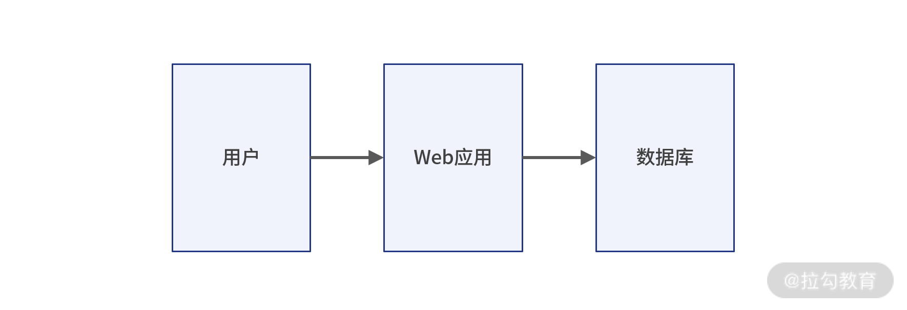
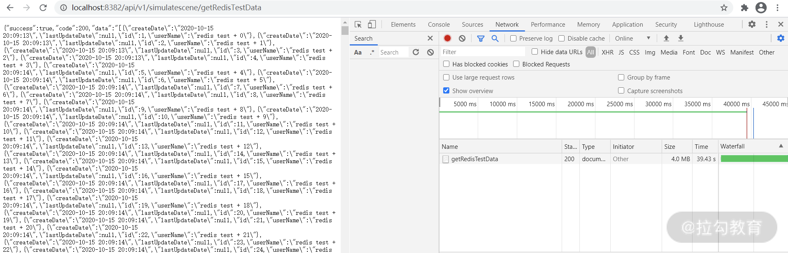

- 00 开篇词 为什么每个测试人都要学好性能测试？.md
- 01 JMeter 的核心概念.md
- 02 JMeter 参数化策略.md
- 03 构建并执行 JMeter 脚本的正确姿势.md
- 04 JMeter 二次开发其实并不难.md
- 05 如何基于 JMeter API 开发性能测试平台？.md
- 06 Nginx 在系统架构中的作用.md
- 07 你真的知道如何制定性能测试的目标吗？.md
- 08 性能测试场景的分类和意义.md
- 09 如何制定一份有效的性能测试方案？.md
- 10 命令行监控 Linux 服务器的要点.md
- 11 分布式服务链路监控以及报警方案.md
- 12 如何把可视化监控也做得酷炫？.md
- 13 Docker 的制作、运行以及监控.md
- 14 如何从 CPU 飙升定位到热点方法？.md
- 15 如何基于 JVM 分析内存使用对象？.md
- 16 如何通过 Arthas 定位代码链路问题？.md
- 17 如何应对 Redis 缓存穿透、击穿和雪崩？.md
- 18 如何才能优化 MySQL 性能？.md
- 19 如何根治慢 SQL？.md
- 20 结束语 线上全链路性能测试实践总结.md
17 如何应对 Redis 缓存穿透、击穿和雪崩？
上一讲我带你学习了如何应用 Arthas 定位代码以及链路问题。这一讲我将带你来学习一个关键的内存数据库中间件 Redis，希望你可以了解它的作用，以及在使用过程中的常见问题以及解决方案。
为什么使用内存数据库？
首先我们来看看最早期的 Web 架构是什么样的，如图 1 所示：

图 1：早期架构
这是互联网早期的常用架构，不过这样的架构一般只满足于基本的业务运转，一旦业务量迅速增高，就会出现各种请求延迟，甚至超时响应或者直接请求拒绝的情况 ，也就是在高访问量下会发生性能问题，而且这样的框架性能问题又集中在数据库层面。
那么问题来了，为什么会产生这种情况呢？由于数据库的数据是存在硬盘上，硬盘的 I/O 读写瓶颈会直接影响并发量。既然磁盘 I/O 读写时瓶颈，我们是不是可以采用速度更快的内存来存储常用但数据量不算大的数据呢？答案是肯定的。
为了解决上面的问题，目前通用的做法是引入基于内存的数据库，这样的数据库一般是把数据先放到内存里，引入缓存中间件之后的项目 Web 服务架构图如下所示：

图 2：演变架构
这样便可以较大程度缓解传统数据库带来的磁盘 I/O 读写瓶颈，而我们最常使用的基于内存的数据库就是 Redis 和 MemCached。
Redis 和 Memcached 对比
1.存储方式
- MemCached 目前只支持单一的数据结构 Key-Value 形式；
- Redis 支持多种数据结构，有字符串、列表、集合、散列表、有序集合等。
2.持久化
持久化就是把数据从内存永久存储到磁盘里，可以防止断电等异常情况下数据丢失等问题。目前 Redis 支持持久化，而 MemCached 不支持。遇到灾难，MemCached 无法恢复数据，Redis 可以恢复数据，保证了数据的安全性。
从以上特点可以看出 Redis 在数据多样性和安全性上远高于 MemCached。以我的从业经历讲，MemCachded 使用频率越来越低，绝大多数的业务场景使用 Redis 居多。
Redis 带来的性能影响
我们列举一个案例来看 Redis 带来的性能影响。
我们使用 Spring Boot 开发连接 Redis 的 demo，分如下三步。
（1）在 Maven 中引入 Spring Boot 使用的 Redis 类库，如下代码所示：
<dependency>
<groupId>org.springframework.boot</groupId>
<artifactId>spring-boot-starter-data-redis</artifactId>
<version>2.4.2</version>
</dependency>
（2）通过注解方式获取 RedisTemplate，如下代码所示：
@Autowired
private RedisTemplate<String, String> redisTemplate;
（3）使用 Redis 提供的 API 实现业务代码的缓存读写，如下代码所示：
@GetMapping("/getRedisTestData")
public Result getRedisTestData(){
String redisTestListData = null;
try {
redisTestListData = redisTemplate.boundValueOps("redisTest.findAll").get();
//如果redis中没有数据的话
if(null == redisTestListData){
//查询数据库获得数据
List<RedisTest> redisTestList = simulateSceneRepository.findAll();
//转换成json格式字符串
ObjectMapper om = new ObjectMapper();
redisTestListData = om.writeValueAsString(redisTestList);
//将数据存储到redis中，下次在查询直接从redis中获得数据，不用再查询数据库
redisTemplate.boundValueOps("redisTest.findAll").set(redisTestListData);
log.info("从Mysql数据库获得数据");
}else{
log.info("从redis缓存中获得数据");
}
} catch (Exception e){
log.error("e:{}",e);
}
return Result.resultSuccess(null,redisTestListData,"数据读取成功");
}
通过如上三步就可以完成 Java 使用 Redis 的 demo，我大概总结下代码流程，第一次先判断 Redis 中是否存在查询的数据，如果没有就需要从数据库中读取数据了，读取成功之后把数据回写到 Redis 中，后面的请求就能直接从 Redis 中直接读取了，较大地减少了对数据库的查询压力。我们可以通过运行上面写好的代码来看下实际效果。
首先我们向数据表 redis_test 插入 10w 条数据，然后分两次访问该接口，对比下两次访问的响应时间。
第一次直接从 MySQL 数据库读取，一共花了 39.43s，如下图所示：

图 3：MySQL 取数据耗时
而第二次数据已经进入 Redis，请求只需要 2.62s，节省了很长时间。值得注意的是为了演示效果，取出的数据条数达到 10w+，所以响应时间也达到了秒级别。在正常的互联网业务当中，Redis 读写操作均在毫秒级别。

图 4：Redis 取数据耗时
从上面实例可以看出使用 Redis 和不使用 Redis 性能差距明显，所以从目前的互联网项目来讲，使用 Redis 是一个非常普遍的情况，接下来我们来了解下 Redis 其他特性和优缺点。
Redis 其他特性以及优缺点
1.Redis 的特性
主从复制功能
虽然数据在内存中读写速度比较快，但是在高并发情况下也会产生读写压力特别大的情况，Redis 针对这一情况提供了主从复制功能。
主从复制的好处有如下两点：
- 提供了 Redis 扩展性，当一台 Redis 不够用时，可以增加多台 Redis 作为从服务器向外提供服务；
- 提供了数据备份和冗余服务器，当 Redis 主服务器意外宕机，从服务器可以顶替主服务器向外提供服务，增加了系统的高可用性。
脚本操作
Redis 提供了 lua 脚本操作，你可以将 Redis 存取操作写到 lua 脚本里，然后通过 Redis 提供的 API 来执行 lua 脚本，这样就可以实现 Redis 相关操作。
我们同样可以用 Redis 提供的 API 直接实现 Redis 相关操作，那么为什么有时候又要绕一圈去操作 lua 脚本呢？因为 lua 脚本能够保证操作的原子性，即所有的操作当作一个操作，要么全部失败要么全部成功。而直接使用 API 不一定能保证一连串操作的原子性，所以当需要保证原子性的时候需要使用 lua 脚本。
发布与订阅
该特性可以将 Redis 作为消息中间件，在服务端产生消息，然后在客户端消费消息队列里的消息，但是作为消息队列不是 Redis 的强项，所以不推荐使用。比如 Redis 作为消息队列消息并非完全可靠，会产生消息丢失的问题，并且也不支持消息分组。在性能上，如果入队和出队操作频繁，那 Redis 性能比起 RabbitMq 等常用消息队列来说还是有差距的。
了解了 Redis 的一些特性，那使用过程中有没有一些注意点呢？其实我们也会踩到坑，比较常见的问题是缓存穿透、缓存击穿以及缓存雪崩，接下来就来讲讲这些问题出现的现象以及如何解决。
2.Redis 的缺点
缓存穿透
缓存穿透的情况是 Redis 和 MySQL 数据库都没有这条数据，但是用户不断并发发起请求，请求压力会同时落到数据库和缓存上，这样的情况相对于设计初衷来说，对系统的压力就会大很多了，而且这也是黑客发起攻击的手段之一，找寻你的系统是否存在漏洞。
那在项目中如果遇到缓存穿透我们该如何解决呢？
遇到缓存穿透，我们可以在请求访问缓存和数据库都没查到数据时，给一个默认值或者 Null 值，即 Key-Null。然后该缓存值的有效时间可以设置得短点，比如 30s。在业务代码中判断如果是 Null 值就取消查询数据库，或者间隔 30s 之后重试，这样的方式可以大幅度减轻数据库的查询压力。
缓存击穿
单个数据在缓存中不存在，而在数据库中存在。一般这种情况都是缓存失效导致的，在缓存失效的时间段有大量并发用户访问，首先访问缓存，因为 Key 已经过期了，所以查不到数据，然后所有查询压力都会落到数据库上，造成数据库的压力过大。并且还有可能因为并发问题导致重复更新缓存而过多占用缓存资源。
在项目中如果遇到缓存击穿问题，该如何解决呢？
- 对于一些经常被访问的热点数据，可以根据业务特性主动检查使其 Redis 数据永不过期，当然这样的设置并不代表说这条数据一直不更新而处在 Redis 中，而是根据数据字段中的失效时间和系统时间的对比主动检查更新数据，使 Redis 数据不会过期；
- 通过后台定时刷新，根据缓存失效时间节点去批量刷新缓存数据，这个适合 Key 失效时间相对固定的场景。
缓存雪崩
大量数据在同一时间失效，会造成数据库查询压力过大导致宕机。缓存雪崩与缓存击穿的区别在于缓存击穿是单个数据失效，缓存雪崩是多个数据同一时间失效。
在项目中如果遇到缓存雪崩的问题，我们该如何解决呢？以下 3 种方法可以帮我们解决。
- 如果程序设置的缓存过期时间统一为一个固定的值，比如 5s、10s、15s 等等，那么很有可能出现大量数据在同一时间失效。这个时候我们可以设置不同的过期时间，比如统一时间加上一个随机时间，这样可以让缓存的时间尽量均匀分布一点。
- 不设置过期时间，让程序的定时任务自动定时更新或者清除缓存
- 使用集群化的方式，保证高可用。
总结
通过本讲的学习你了解了 Redis 的作用，Redis 使用过程中遇到的缓存穿透、缓存击穿以及缓存雪崩现象，及如何解决此类问题，相信你已经有了一个更深刻的认识。